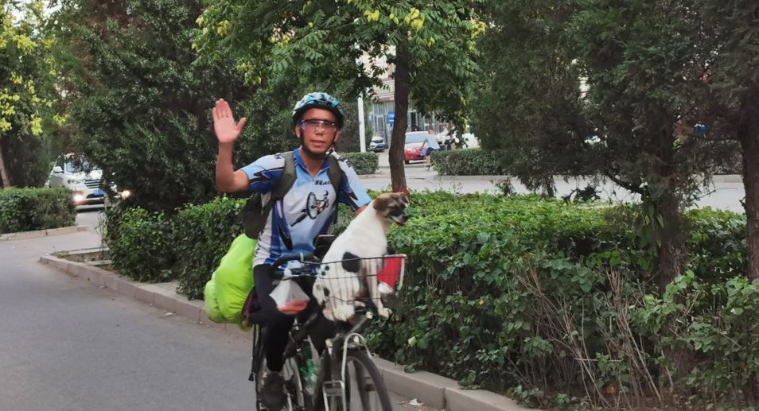
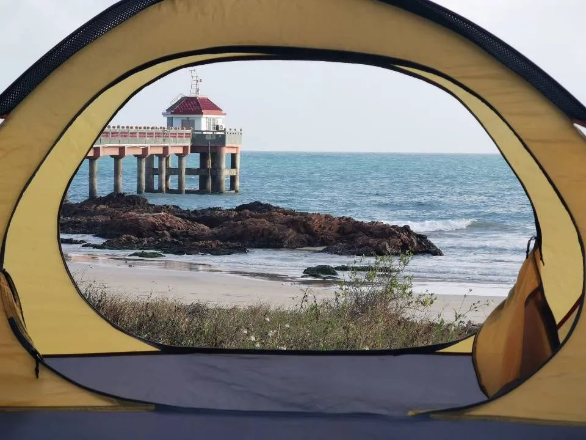

环游中国341天后，这位湖北骑士被定格在了家乡外
原文链接 备份链接 在18世纪的传说中，“飞翔的荷兰人”是一艘注定永远漂泊、无法返乡的幽灵船。在过去一年里，灰兔成了一名“飞翔的湖北人”，骑行经过了近乎全中国。可他虽然围着中国转了一大圈，却绕开了湖北，没有再回去。 本文为今日头条“编 …


新疆无人区，连绵不断的戈壁滩 。受访者供图
摘要：2019年2月19日，湖北人灰兔为了寻找生活的意义，决定用一年时间环中国骑行。旅程即将结束时，疫情爆发，灰兔寸步难行，最终在厦门被带去酒店隔离，后来成为酒店的一名志愿者。他本以为在旅途中找到了答案，现在发现那些轻飘飘的忧虑不值一提。
文| 李晓芳
编辑 | 王珊
灰兔设想过很多种旅行结束的方式：一路骑到国境最北端的漠河，在最冷的季节看一场大雪；或是回到出发地上海，和路上结识的朋友再次相聚；甚至彻底扔掉地图，骑满365天，骑到哪里算哪里。
灰兔24岁，皮肤微黑，个子不算太高，想法不算特立独行。一年前，他突然厌倦了一成不变的生活，决定环中国骑行，渴望找到一个关于自我和生活的答案。
三百多天的骑行路上，灰兔带着他的橙色帐篷睡过各种地方，立交桥下、无人的广场、公园的凉亭、山上的寺庙、荒凉的戈壁滩、乡村老人院……他见过形形色色的人，渴望骑哈雷摩托去旅行的中年交警，念经时打瞌睡的小沙弥，还有60多岁的老大爷在西藏捡了一块石头藏起来，三年后又去了一趟西藏，只为了把石头挖出来。
起初，他想通过“上路”拨开生活中的重重迷雾。旅程的结尾，他觉得自己走出了那片雾气，找到了答案。然后，疫情来了。
还有27天，就要走到终点，武汉“封城”了。作为一个在外游荡的湖北人，灰兔在厦门“落网”，被带去隔离。
这时，他发现，之前的问题和答案，在疫情面前不值一提。
骑行至辽阔荒凉的西北旷野。受访者供图
“普鲁斯特”问卷
2019年2月19日，元宵节，灰兔带上帐篷、换洗衣服、手机相机、一堆压缩饼干，还有一份“普鲁斯特问卷”，骑上自行车出发了。
灰兔是湖北荆门人，而后考上武汉大学。填志愿时，药学的名称看着最短，就选择了这个专业。毕业后，他顺利找到一份实习工作，干了三四个月，得到了转正名额。
每天上班就是盯着药物生产流程，处理药材进出库文件，不需要动脑，时间长了，工作甚至成了一种下意识动作。
公司有工作了三年、十年、二十年的前辈，灰兔看着他们，觉得看到了自己的未来。“我想要的到底是不是这种生活？” 他陷入迷茫。
正式转正的前两天，灰兔仓促地提了离职。他害怕不离开，就再也不能离开。
既然不知道自己想要什么，就把在意的东西全部丢掉，从零开始经历一遍生活，“再想我是真的需要它们吗？”出发前，灰兔烧掉最喜欢的衣服、抱枕，还有日记，捐了身上所有的钱。
灰兔并不是一个莽撞的人，大学时期，他跑马拉松，会将自己的日程表精确到分钟，严格规定每天吃多少麦片，喝几升牛奶。但关于旅行，他只有大致方向，没有具体计划。甚至在最开始，连方向也没有。

大学时期参加马拉松比赛的灰兔。受访者供图
只有“普鲁斯特”问卷是提前就拟好的，这类问卷会针对被提问者的生活、价值观、人生经验等拟定问题，在19世纪因作家普鲁斯特的答案而闻名。灰兔仿照着问卷列出了12个他最困惑的问题：“你对现在的生活满意吗？”“你有什么想做而没有做的事？”“有什么事情阻拦了你？”
他从上海出发，一路向北，骑行1万5千公里，沿路寻找这些问题的答案。
灰兔把问题抛给路上遇见的各种人。骑行第一天，在上海松江的小饭馆，他问老板17岁的儿子，觉得人生中最幸运的事是什么？小男孩想了想，露出腼腆笑容，当然是找到对象。灰兔又去问老板娘，干练的妇人回答：“听说别人开店时不时被骚扰，我开店一路平平安安，也算是幸运了。”
路遇大雨，嘉兴汽修店的老板看着被冻得瑟瑟发抖的灰兔，领着他进了有暖气的房间。老板喜欢钓鱼，灰兔问他，有没有什么特别想过的人生？老板说，这个问题没有意义，谁不想大富大贵应有尽有？但迟疑了一会，又说，只要能做自己喜欢的事就好，随心所欲。
到了河南，大篷车上表演的豫剧团主动招呼灰兔一起吃午饭，灰兔问里面一位51岁的花臂大叔，活着是为了什么？花臂大叔说，为了家庭的幸福吧。想了想补充，为了自己的喜欢。
灰兔在日记里巨细靡遗地记录下路上每个人给他的回答，但每个人的答案都没办法解答他的疑惑。“问多了之后，你会发现别人的答案，跟你没什么关系。”
灰兔是个喜欢读书的理科男。刚开始骑行，他会在路上看黑塞，边骑车边整段背诵海明威的文章。经过一大片被细雨湿过的田野，他突然想起米沃什的半句诗：“一只蝴蝶愚蠢地跨海航行”。
有时，他觉得自己对生活的困惑消失了。那是在安徽山间的一段下坡路上，他放开车闸，太阳明亮，春风拂面，呼吸的空气、车轮驶过的柏油路面、路边早起的人们，“过去那些忧愁不复存在。我在疾驰而下的快乐中把它忘掉了，它像是阳光下的初雪，迅速消融。”
但过了几天，他坐在路边看湖，水腥味扑进鼻腔，瞬间被孤独捕获了，他不知道自己究竟想要什么，趴在帐篷里，动弹不得。
“我想打破自己的笼子，于是我就上了路。可我并没有感觉自己好到哪去，笼子锁在我心里，我走哪儿都把它带着。”他在日记里写。
骑行第105天，灰兔寄住在河南王屋山上的一座道观里。早上7点食堂开饭，8点10分上早课。义工和道士们轮流值殿，剩下的时间凑在一起喝茶聊天，聊山下的美食、修仙的道友，对着观里的狸花猫吹完一整首《绿野仙踪》。
山上的生活称得上悠哉，但灰兔还是想着他的问卷。他和一位道士聊天，问对方：“道士修道，什么是道？”
道士告诉他：“身体力行的就是真道。怎么描述道不重要，重要的是你做了什么。”

王屋山上的道士，对着狸花猫吹《绿野仙踪》。受访者供图
灰兔的答案
从道观离开，灰兔说不清是什么最终触动了他。那是骑行的第114天，他到了山西，参观完一座古庙，重新跨上车。路上是大片大片的田野，一眼望不到头，时间也还早，才五点半，离天黑还有一段时间。
就在那片漫无边际的田野上，灰兔第一次觉得笼子出现了裂痕，“过去那些困扰我的问题一下子离我远去了，我睡过马路边，睡过天桥底下，甚至垃圾堆旁边，我觉得自己可以选择任何一种人生。天地这么广阔，我在天地间又是如此自由，好像我随时随地可以去到任何地方。”
他开始明白王屋山上道士说的话，他不再拿问卷问人，“那些问题大而空。”遇到有趣的人，他会跟着他们走一段路。
刚出发时，他在湖州警局门口扎帐篷，值班的警察邀请他进去喝茶，又往他手里塞了八根肉串。队长羡慕灰兔此刻的自由，说自己二十出头当上交警，一干就是十年，再没有出去玩的时间。队长是交警，看过太多的生命在自己面前逝去，但他还是喜欢摩托，想出去旅游，希望驾驶一辆哈雷穿过长长的街道，在不同的城市间落脚。
一位老伯刚见面就邀请灰兔住进家里，领着他逛遍整个湖州。灰兔在老伯家住了三天，听他讲当地历史。湖州老伯一直想买辆车沿着318国道一路开下去，或者是从杭州，沿京杭大运河开到另一头的北京通州。他还想去看看富春江，他说千岛湖也很美，不同于太湖，有另一种风格。他考好了驾照，家人却觉得危险。老伯在最后一个晚上告诉灰兔，他这辈子基本没出过湖州。
往西骑到拥有辽阔草原的内蒙古，灰兔遇到一位从南昌骑过来的大爷，带着一只黑白花色的小狗。小狗是流浪犬，南昌大爷在呼和浩特遇见它，喂了根火腿肠，它就坐进车筐里不肯动了。大爷给小狗取名“远征”，带它一起上路。
南昌大爷的目标是骑完全国。42岁时他准备出发，为此提前一年准备自行车、帐篷，家里老人却不同意。52岁时，他觉得不能再等了，时间耽误不起，他直接辞了职。遇到灰兔时，他已经骑完了十六个省。

大叔和“远征”。受访者供图
大爷在兰州拉面店就着啤酒，神采飞扬地说着自己的目标。灰兔想，他知道自己想要什么，十年未曾动摇。大爷出发的那一刻起，旅程就完成了，剩下的只是无关紧要的过程。
两人一狗在内蒙古相见，也在此地分离。南昌大爷将“远征”托付给一位建筑工人，灰兔突发急性咽炎，停在原地休整，大爷一人继续往前。临走前，大爷骑车出去了一趟，过了许久回来，递给灰兔几个沉甸甸的塑料袋，灰兔对着阳光一看，装着几瓶什锦罐头。
灰兔拿着罐头想说谢谢，但最终什么也没说出来。
他没找到答案，但找到了让一天充实的秘诀：不要想太多，睡前不要玩手机；早睡早起，多吃粗粮；在年轻的时候，找到永恒不变的事物。
到了甘肃，灰兔一路骑进了原本要避开的新疆，路上遇到的人越来越少，公路似乎直接与天际接壤，到处是几百公里起步的无人区，极目远眺，是复制粘贴一样的成片戈壁滩。

2019年9月，抵达甘肃酒泉市，在戈壁滩上露营。受访者供图
大部分时间只是机械地蹬着脚踏板。所幸景色足够壮丽，灰兔看了无数次极美的日出日落，看银河悬在头顶。晚上把帐篷往戈壁滩上一扔，就可以倒头大睡。
在那样荒凉辽阔的旷野上，他彻底理解道士说的“道”，“我走过山川湖海，睡过古庙道观戈壁沙漠，见的这一切就是解答。” “我以为在旅程中我会寻找出一道界限，划分出自己生活的范围，也许是一座城市，一份工作，或者是一个学位。但其实并没有那样一条线。”
苦寻答案的问题消解了，灰兔说，或许问题本身就是不存在的。
秋风掠过，又迅速进入难熬的冬天。快到结束的时刻了。
在青海省海东市遇见的无人游乐园，当晚在这里露营。受访者供图
隔离
灰兔在广东湛江的一处广场上迎来了新年的第一天。跳广场舞的大妈们难得放了个假，灰兔睡到了自然醒。1月14日，家人催他回荆门老家过年。他想了想，说好的骑行一年不能少，只差最后一个月了。他决定绕过湖北，骑到福建。
灰兔是个对新闻不太敏感的人。过去一年，除了在无人区，他从未与外界断过联系，但那些显示在手机上的新闻——非洲猪瘟、鼠疫，对他来说，更像是一些“遥远的余波”。
灰兔一直在论坛更新自己的骑行日记。1月23日，武汉“封城”，早上8点，他在论坛里发了一张图片，一位宇航员在月球上看着陨石砸向地球，配文：飘在外面，感想是这样的。
他照常收拾行李准备出发。路上和家人朋友聊起“封城”，大家都觉得不会持续太久。网友也没太当回事，还祝他新年快乐，问他什么时候更新游记。

海南省琼州市，在帐篷里看到的大海。受访者供图
1月25日，大年初一，灰兔从漳州骑向厦门，贴着海岸线骑行。路上，他和一位骑着摩托车的白衣青年一起骑上了一座山，山顶有高高矗立的风车，云朵像潮水漫过山顶，更远处是大海，和天空融为一体。
当天从山上下来，一切都变了。家人不再催促他回家，母亲说，要不然你就骑到东南亚去。
整座城市空空荡荡，路上看不见行人，零星车辆从他身边驶过。那天，全国30个省级行政区先后启动重大突发公共卫生事件一级响应。湖北全省除了襄阳、神农架林区，所有城市封闭公共交通。灰兔突然回过味来，“为什么骑着车就变成了世界终末的旅行？”
他打算找旅馆洗漱休息，老板一律先问，“你是哪里人？”“湖北。”
得到的回答是客满了，旅馆停业了，不提供住宿了。城里的洗浴中心也取消了住宿业务。
没有办法。他在厦门周边转悠，又骑了十几公里，进了路边一家小旅店，“你好，我虽然是湖北人，但一年都在外面骑车没有回去，这是我一年的移动轨迹……”手机刚掏出来，老板躲了过去，挥手示意他快走。
他在小区周围落脚，附近居民恐惧那顶不明来路的帐篷，向街道办打了投诉电话。
过去一年里，灰兔遇见的绝大多数都是善意，饭店老板会多加一勺面，骑行的短期旅伴给他塞几袋酸奶，陌生的人们会邀请一个异乡人住进自己家。
骑行途中，常常会迎面碰上没有预告的暴雨，“但你只要一直往前骑，前面总会迎来晴天的，然后就可以在阳光下把衣服晒干。”他把那些歧视、拒绝看做总会消散的暴雨。他一直相信，前方会有好事发生。
1月29日清晨，灰兔在帐篷中被人叫醒，被带去厦门的酒店进行14天隔离。
酒店不收费，他每天看漫画、打游戏，坐在靠窗的桌前整理游记。酒店负责人老郭觉得他一路骑行不容易，自掏腰包给了他一千块，灰兔转头把钱捐给了湖北的抗疫基金会。
2月10日，隔离期结束，他拿着酒店开具的健康证明重新上路，想四处看看，记录这个特殊时期里都发生了什么。
但出了酒店，他才发现，“事态比在酒店拉着窗帘看电视，吃着一天三顿准点送到的隔离餐的我，所能想象得严峻得更多。”没有一家饭店开门，路上的行人十个手指能数完，他仿佛在荒野穿行。
当天夜里，灰兔坐在公园长椅上休息。巡逻员循着灯光过来查问身份，灰兔把42开头的身份证和健康证明一起掏出来，“我是湖北人，已经隔离十四天了。”巡逻员退了两步，转身离开了。
前方的道路关卡拦着不让过，健康证明起不到任何作用。厦门的朋友给他发信息，实在不行就折返吧，家里还有地方，可以让他借宿。
他只能往回骑。回去的路上有座桥，尽头设置了关卡，执勤人员看了眼灰兔的身份证，说你过不去的。天空飘了阵细雨。他推着自行车，想从桥的另一个方向下去，结果那边突然也出现了一队检查人员，也不让他过去。
桥的两边属于不同的行政区。灰兔被困在桥上，干等了五个小时，打了四次报警电话，天彻底暗下来，才得以下桥，摸黑骑到朋友家。
结果朋友家的小区也被拦上，灰兔只能在对面的空地搭帐篷。
第二天，帐篷也不允许搭了，街道办的工作人员围着他，不知道该怎么处理这个棘手的湖北人。最后是街道办的一位大姐顶着压力，让灰兔暂时住进了他们的办公室，“都是同胞，不能让你流落成这样。”
2月14日下午两点多，灰兔从街道办出来，在街上游荡，他也不知道去什么地方，晚上在哪里落脚。这时，之前隔离酒店的负责人老郭打来电话：我们接到有关你的调查电话了，你现在肯定没有地方去，那就回来吧。

隔离酒店的窗外 受访者供图
轻飘飘的忧虑
又开始下雨了，灰兔湿淋淋地骑回酒店，在这个隔离了14天的地方住下。没有别的事可忙，灰兔成了一名志愿者。
这是一处远离疫情中心的医学观察点，志愿者可做的工作也不多。每天，灰兔举着额温枪给出入人员测量体温；把隔离餐送到酒店入口，再由专业工作人员穿着防护服送到各个隔离房间的门口；偶尔值值夜班。
那辆爆胎无数次的橙色自行车孤零零地停在酒店小小的停车场上，他偶尔去看看，擦一擦灰。

酒店走廊，每天的隔离餐会放在房间门口摆放的红凳子上。受访者供图
灰兔每天都会看新闻，和湖北的朋友聊天，谁家小区能买到菜了，谁去做义工了，还有上学时发生的趣事，偶尔聊到一些死亡的消息，不会长谈，大家默契地地转移话题。
武汉是他待了四年的地方，他最熟悉的是以学校为中心，以五公里为半径画出的那个小圈子。一年四季，他会和同学变着法儿设计散步路线，按照季节把学校周边最好的景色囊括进去，“我每天看到的武汉，都是最美的。”
他一直没能从这场冲击中反应过来，“一个好端端的城市，突然’封城’了，然后城市里的很多人死去。”
灰兔的老家荆门，确诊人数在湖北排第6位。2月的一天，灰兔的母亲给他打电话，怀疑自己感染了新冠肺炎，两个人对着电话大哭。“那一刻就是想赶紧回家。”所幸是虚惊一场。灰兔的姨妈、表姐都是医务人员，家族群里每隔几天报一次平安。表姐会在轮岗休息时间发一次朋友圈，那是告诉所有关心她的人，情况尚好。
灰兔发现，过去300多天思考的东西，那些个人的生活与意义，和疫情相比，都是轻飘飘的。
他的声音低了下去，“太沉重了，沉重到了，稍微去想一想，都觉得没办法去思考。”接下来，他沉默了。
他只能去记录身边发生的事情。前几天，有人给老郭送了锦旗。那是隔离在酒店的一家五口，老母亲有胃溃疡，老郭专门安排厨房，给她做饺子、面条，每天送牛奶。有个湖北的小孩，刚来时穿着厚厚的冬装，厦门热起来，闷出了一身痱子，老郭就把自己孩子的衣服洗好烘干送过去。不识字的工人不知道怎么开健康证明，老郭一步步帮忙办好。
灰兔在日记里写道，“我只认识这一个老郭，可不只是一个老郭，更多的事情发生在这之外，更多的老郭值守在一线，再到了我这里，能看见的只是这些日子里，永远无事发生。”
沿路遇过的人们大都安然在家。前几天，湖州老伯给灰兔发浙江、五台山的照片，讨论路上种种。南昌大爷回家后一边做社区志愿者，一边抽空办好了港澳通行证，等着疫情结束。
酒店里解除隔离的人越来越多，从2月17日开始，厦门已经连续30天没有新增确诊病例。灰兔的工作越发清闲，每天的任务只剩送一顿午餐。
按照原计划，他的环中国旅行应该已经结束了。他本来计划再花一年时间环世界旅行，看看更多截然不同的人生和风景，那是他在路上就想好的。
但他想家了。等疫情结束，这个流浪了395天的年轻人想先回家。
后台回复”读者群”, 加入更多讨论

小昼
长按二维码向我转账
受苹果公司新规定影响，微信 iOS 版的赞赏功能被关闭，可通过二维码转账支持公众号。
原文链接 备份链接 在18世纪的传说中，“飞翔的荷兰人”是一艘注定永远漂泊、无法返乡的幽灵船。在过去一年里，灰兔成了一名“飞翔的湖北人”，骑行经过了近乎全中国。可他虽然围着中国转了一大圈，却绕开了湖北，没有再回去。 本文为今日头条“编 …
原文链接 备份链接 文/麓泉 编辑/大风 从1月23日算起，武汉宣布封城已经大概过去了半个月的时间。 一时间，湖北乃至其中的任何一个城市，都成了闻之色变的词语，与湖北有关的人成了全国各地区无差别“歧视”的对象。 封城后的武汉，图源于微博林 …
原文链接 备份链接 《战疫口述记》，是燃财经在新型冠状病毒肺炎期间推出的特别栏目，记录疫情亲历者的观察和感受。本文为第3篇，查看前2篇请点击《农村这样防肺炎》《我在武汉战肺炎》。 作者 | 苏琦 金玙璠 孟亚娜 唐亚华 孔明明 魏佳 …
原文链接 备份链接 *************▲************* 四川省巴中市巴州区，一辆鄂A车牌（武汉）轿车的车窗上，贴着红岩社区加盖公章的证明，称车主无感冒发烧现象，且正在家自行隔离。 （杜茂林/图） 全文共*4201*字， …
原文链接 备份链接 “我们这部分很模棱两可，不上不下的人，没有人管” “问题核心是对病毒的恐惧，变成了对湖北人的恐惧” 本文首发于南方人物周刊 文 | 本刊记者 张明萌 实习记者 梁翰文 编辑 | 蒯乐昊 全文约3645字，细读大约需 …